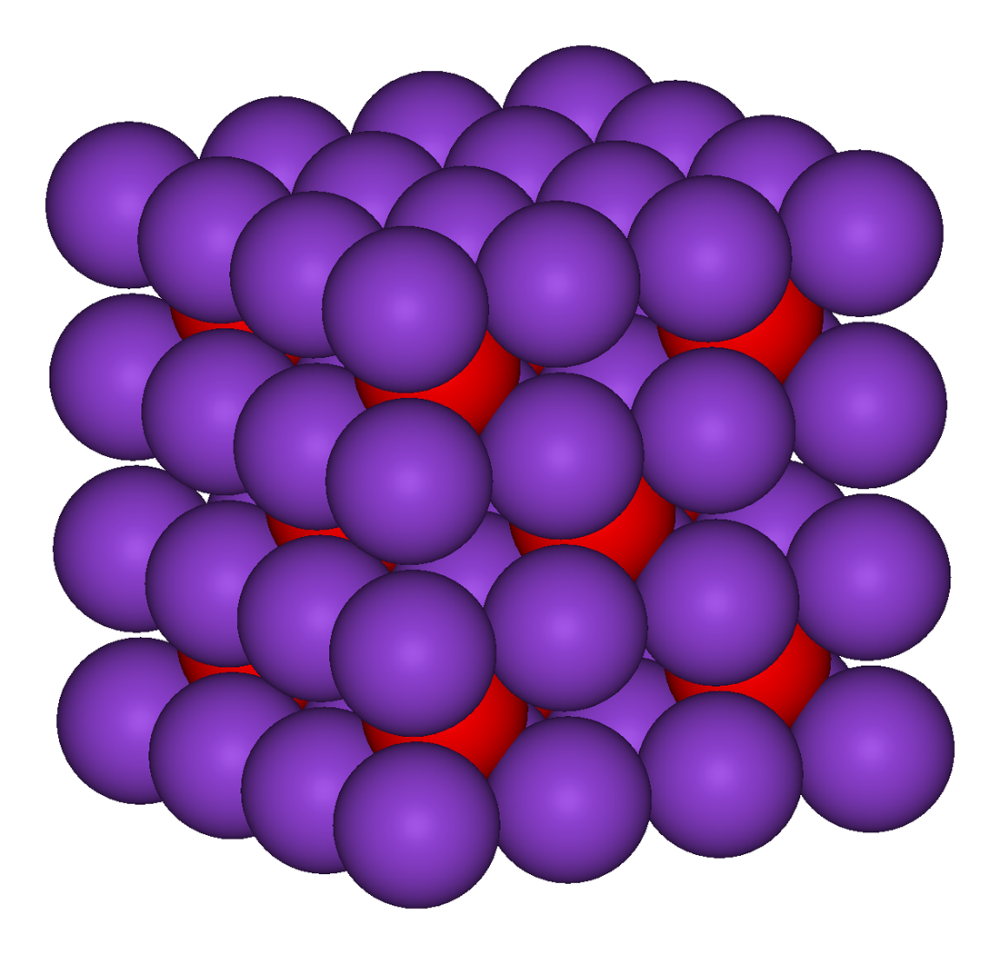
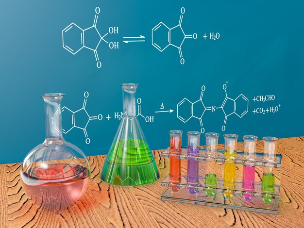

Organic Chemistry
What Is Organic Chemistry? Organic chemistry is the branch of Chemistry that involves the scientific study of organic compounds (compounds that contain covalently bonded carbon atoms). This branch of chemistry primarily deals with the structure and chemical composition of organic compounds, the physical and chemical properties of organic compounds, and the chemical reactions undergone by these compounds.Advancements in the field of organic chemistry have made numerous contributions to human society, such as the synthesis of several drugs, polymers, and other natural products. Synthetic organic chemistry is an important application of organic chemistry that deals with the design and construction of organic compounds for practical purposes.Organic compounds form the basis of all earthly life and constitute the majority of known chemicals. The bonding patterns of carbon, with its valence of four—formal single, double, and triple bonds, plus structures with delocalized electrons—make the array of organic compounds structurally diverse, and their range of applications enormous. They form the basis of, or are constituents of, many commercial products including pharmaceuticals; petrochemicals and agrichemicals, and products made from them including lubricants, solvents; plastics; fuels and explosives. The study of organic chemistry overlaps organometallic chemistry and biochemistry, but also with medicinal chemistry, polymer chemistry, and materials science.
Organic chemistry is the branch of Chemistry that involves the scientific study of organic compounds (compounds that contain covalently bonded carbon atoms). This branch of chemistry primarily deals with the structure and chemical composition of organic compounds, the physical and chemical properties of organic compounds, and the chemical reactions undergone by these compounds.Advancements in the field of organic chemistry have made numerous contributions to human society, such as the synthesis of several drugs, polymers, and other natural products. Synthetic organic chemistry is an important application of organic chemistry that deals with the design and construction of organic compounds for practical purposes.Organic compounds form the basis of all earthly life and constitute the majority of known chemicals. The bonding patterns of carbon, with its valence of four—formal single, double, and triple bonds, plus structures with delocalized electrons—make the array of organic compounds structurally diverse, and their range of applications enormous. They form the basis of, or are constituents of, many commercial products including pharmaceuticals; petrochemicals and agrichemicals, and products made from them including lubricants, solvents; plastics; fuels and explosives. The study of organic chemistry overlaps organometallic chemistry and biochemistry, but also with medicinal chemistry, polymer chemistry, and materials science.
INORGANIC CHEMISTRY
Inorganic chemistry deals with synthesis and behavior of inorganic and organometallic compounds. This field covers chemical compounds that are not carbon-based, which are the subjects of organic chemistry. The distinction between the two disciplines is far from absolute, as there is much overlap in the subdiscipline of organometallic chemistry. It has applications in every aspect of the chemical industry, including catalysis, materials science, pigments, surfactants, coatings, medications, fuels, and agriculture.Occurrence
Inorganic compounds are found in nature as minerals.Soil may contain iron sulfide as pyrite or calcium sulfate as gypsum.Inorganic compounds are also found multitasking as biomolecules: as electrolytes (sodium chloride), in energy storage (ATP) or in construction (the polyphosphate backbone in DNA).
Bonding
Inorganic compounds exhibit a range of bonding properties. Some are ionic compounds, consisting of very simple cations and anions joined by ionic bonding. Examples of salts (which are ionic compounds) are magnesium chloride MgCl2, which consists of magnesium cations Mg2+ and chloride anions CL; or sodium hydroxide NaOH, which consists of sodium cations Na+ and hydroxide anions OH. Some inorganic compounds are highly covalent, such as sulfur dioxide and iron pentacarbonyl. Many inorganic compounds feature polar covalent bonding, which is a form of bonding intermediate between covalent and ionic bonding. This description applies to many oxides, carbonates, and halides. Many inorganic compounds are characterized by high melting points. Some salts (e.g., NaCl) are very soluble in water.
When one reactant contains hydrogen atoms, a reaction can take place by exchanging protons in acid-base chemistry. In a more general definition, any chemical species capable of binding to electron pairs is called a Lewis acid; conversely any molecule that tends to donate an electron pair is referred to as a Lewis base. As a refinement of acid-base interactions, the HSAB theory takes into account polarizability and size of ions.
ANALYTICAL CHEMISTRY
Analytical chemistry studies and uses instruments and methods to separate, identify, and quantify matter.[1] In practice, separation, identification or quantification may constitute the entire analysis or be combined with another method. Separation isolates analytes. Qualitative analysis identifies analytes, while quantitative analysis determines the numerical amount or concentration.
Analytical chemistry consists of classical, wet chemical methods and modern, instrumental methods.[2] Classical qualitative methods use separations such as precipitation, extraction, and distillation. Identification may be based on differences in color, odor, melting point, boiling point, solubility, radioactivity or reactivity. Classical quantitative analysis uses mass or volume changes to quantify amount. Instrumental methods may be used to separate samples using chromatography, electrophoresis or field flow fractionation. Then qualitative and quantitative analysis can be performed, often with the same instrument and may use light interaction, heat interaction, electric fields or magnetic fields. Often the same instrument can separate, identify and quantify an analyte.
Analytical chemistry is also focused on improvements in experimental design, chemometrics, and the creation of new measurement tools. Analytical chemistry has broad applications to medicine, science, and engineering.
PHYSICAL CHEMISTRY
Physical_chemistry
NUCLEAR CHEMISTRY
Nuclear Chemistry
CHEMISTRYHUB